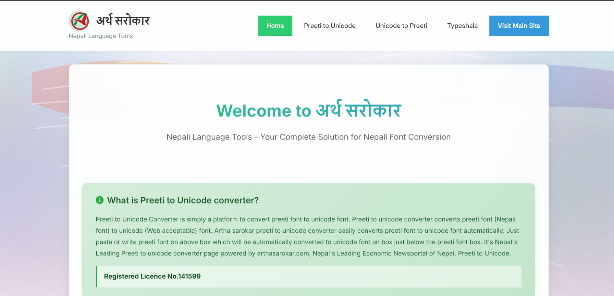

Projects
Projects
Below are the sample Data Analytics projects on SQL, Python, Power BI & ML.

Unicode.Aarthasarokar
Your complete solution for Nepali Font Conversion. Features Preeti to Unicode conversion, Unicode to Preeti conversion, and Typeshala support. Nepal's Leading Economic Newsportal's official converter.

Simple Tools
Professional online utilities with 14 tools ready to use. Fast results, privacy-first approach, and always free - no sign-up or limits.

E-Commerce Starter Kit
A comprehensive boilerplate for e-commerce websites with modern features and best practices implementation.